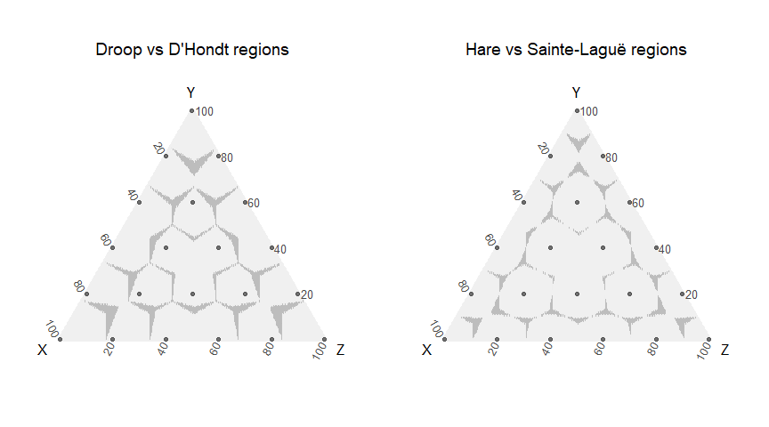

Electoral Space
Geometric visualization for proportional electoral methods.
Code available here: https://github.com/ismaelsb/ElectoralSpace
Interactive web app: https://ismaelsb.shinyapps.io/ElectoralSpace
Introduction
In order to represent 3 variables in 2 dimensions in an only way for each set of proportional values, we can use a ternary diagram. You can see this diagram as the projection of the points from the positive quadrant in space onto the hyperplane of points whose sum of coodinates equals 1. The image of this projection is an equilateral triangle. In the same way we can represent two values in a segment and four values in a tetrahedron. This representation is also known by the name of barycentric coordinates in a simplex.

Electoral allocation functions (more in the code)
A diagram like these can be used to represent the results in political elections in which the votes are shared between 3 parties. Each point in the triangle is represented by three coordinates corresponding the share of votes received by each party. We have a determined number of seats to allocate, and each posible sharing is represented by a highlighted dot (a node) in the triangle and a label with its result. The electoral method would allocate to each electoral result one of the possible sharings of seats. The regions of points to which the same sharing is allocated are represented in the same color. For two parties we'd use a segment. For four, a tetrahedron. The diagram is usefull for visualizing possible seats at stake when the results are close to the borders between two or more regions.
We use a function for electoral allocation for different proportional methods and an optional entry threshold.
We also show some of the functions used to compute allocations or to plot the diagrams.
generateColors <- function (colorRGB, seats) {
nnodes = (seats+1)*(seats+2)/2;
nodes <- as.matrix(generateNodes(seats)[,c("x","y","z")])
#decimal codes for colors in nodes
Code3 = floor(nodes*255.9/seats) #255.9 avoids seats -> 256 -> HEX #100 case
#linear transformation to fixed extreme colors
CodeDecRGB = floor(Code3%*%matrix(colorRGB,3,3, byrow=T)/256)
#hex codes for colors in nodes
CodeRGB=cbind(matrix("#",nnodes),format(as.hexmode(CodeDecRGB[,1]),width=2),format(as.hexmode(CodeDecRGB[,2]),width=2),format(as.hexmode(CodeDecRGB[,3]),width=2))
CodeRGB=do.call("paste0",as.data.frame(CodeRGB))
values=CodeRGB
return(values);
}
alloc <- function(parties, votes, seats, step, threshold=0){
#function for the seat allocation and its ordering
#computes allocation for several values of seats and divisor step methods
#with the same quotiens table
votes=votes*(votes>=(threshold*sum(votes)))
Mst <- max(step)
Mse <- max(seats)
nquotients=(1+Mst*(Mse-1))
#table with all the quotients needed
quotienstable <- data.frame(
parties = rep(parties, each = nquotients),
quotients = as.vector(sapply(votes, function(x)
x/seq(from=1, to=nquotients) )),
votesrep = rep(votes, each = nquotients)
)
SeatsList=list()
filteredtable =list()
for (j in 1:length(step)) {
#select from the table of all quotiens the ones whose divisors
#belong to the current sequence, given 'seats' and 'step'
select <- rep(seq(from=1, to=1+step[j]*(Mse-1), by=step[j]),length(parties))+
rep(seq(from=0,to=nquotients*length(parties)-1,by=nquotients),each=Mse)
filteredtable [[j]] <- quotienstable$parties[select][order(-quotienstable$quotients[select], -quotienstable$votesrep[select])]
SeatsList[[j]]<-list()
#a vector of values for seats if you want to compute the partial sums
for (i in 1:length(seats)){
SeatsList[[j]][[i]]= table(filteredtable[[j]][1:seats[i]])
}
names(SeatsList[[j]])[1:length(seats)]<-do.call("paste0",as.data.frame(cbind("divisor step ",step[j]," for ", seats," seats")))
SeatsList[[j]][[length(seats)+1]] = as.matrix(filteredtable[[j]][1:Mse]) #ordering
names(SeatsList[[j]])[length(seats)+1]<-paste0("ordering for divisor step ", step[j]," for ", Mse," seats")
}
return(SeatsList);
}Examples of allocation
#Allocation example (step=2 Sainte-Laguë; step=1 D'Hondt)
votes <- sample(1:1000, 3)
votes## [1] 77 265 117
#alloc(letters[1:3], votes, seats=5, step=1)
#alloc(letters[1:3], votes, seats=c(3,5,4), step=2:1, threshold=0.5)
alloc(letters[1:3], votes, 9, c(1,2), .05) #print seats sum and allocation## [[1]]
## [[1]]$`divisor step 1 for 9 seats`
##
## a b c
## 1 6 2
##
## [[1]]$`ordering for divisor step 1 for 9 seats`
## [,1]
## [1,] "b"
## [2,] "b"
## [3,] "c"
## [4,] "b"
## [5,] "a"
## [6,] "b"
## [7,] "c"
## [8,] "b"
## [9,] "b"
##
##
## [[2]]
## [[2]]$`divisor step 2 for 9 seats`
##
## a b c
## 2 5 2
##
## [[2]]$`ordering for divisor step 2 for 9 seats`
## [,1]
## [1,] "b"
## [2,] "c"
## [3,] "b"
## [4,] "a"
## [5,] "b"
## [6,] "c"
## [7,] "b"
## [8,] "b"
## [9,] "a"
generateDots <- function(dotsperside, method="lattice"){
dots <- (dotsperside+1)*(dotsperside+2)/2
if (method == "cartesian") {
#Map Cartesian to Ternary to produce a homegeneous simulation
Rc = matrix(runif(2*dots), nrow=dots, ncol=2)
R = matrix(apply(Rc,1, CartesianToTernary), nrow=dots, ncol=3, byrow=TRUE)
}
else if (method == "ternary") {
#Ternary simulation. Projects points in[0,1]^3 to the sum(x)=1 hyperplane
#This creates way more points in the center than in the extremes
R = matrix(runif(3*dots), nrow=dots, ncol=3)
R = prop.table(R,1) #rows sum 1
}
else if (method == "lattice") {
#lattice of dots
#read this if you want to use dots instead of dotsperside as input variable:
#if n is dotsperside
#dots <- (n+1)*(n+2)/2
#inverse calculation:
#n <- floor((sqrt(8*dots+1)-3)/2) #exact
#n <- floor(sqrt(2*dots)) #aprox
#then redefine number of dots
#dots <- (n+1)*(n+2)/2
R <- matrix(0,nrow=dots, ncol=3)
i <- 1
for (x in 0:dotsperside){
for (y in 0:(dotsperside-x)){
R[i,]<- c(x,y,dotsperside-x-y)
i <- i+1
}
}
R = prop.table(R,1) #rows sum 1
}
return(R);
}ManhattanNearest <- function (x, seats, nodes, nnodes) {
Manhattan = which.min(apply(abs(nodes/seats - rep(1,nnodes) %*% t(x)),1,sum))
return(Manhattan);
}OrthodromicNearest <- function (x, seats, nodes, nnodes) {
normnodes <- normalizenodes(nodes)
Orthodromic = which.min(acos((x/norm(t(x),"F")) %*% t(as.matrix(normnodes))))
return(Orthodromic);
}Data frame (more in the code)
SpatialData <- function (dotsperside, seats, step=1, threshold=0, method="lattice") {
#Generate random electoral results
R <- generateDots(dotsperside, method=method)
dots=dim(R)[1] #dots <- (dotsperside+1)*(dotsperside+2)/2
Seats=max(seats)
#nodes
nodes <- as.matrix(generateNodes(Seats)[,c("x","y","z")])
nnodes <- (Seats+1)*(Seats+2)/2;
#Indexes for Voronoi regions
Uniform = apply(R, 1, UniformNearest, seats=Seats, nodes = nodes, nnodes=nnodes)
Manhattan = apply(R, 1, ManhattanNearest, seats=Seats, nodes = nodes, nnodes=nnodes)
Euclid = apply(R, 1, EuclidNearest, seats=Seats, nodes = nodes, nnodes=nnodes)
Orthodromic=apply(R, 1, OrthodromicNearest,seats=Seats,nodes = nodes, nnodes=nnodes)
#allocate seats
AllocStructure <- apply(R, 1, function(x) alloc(as.character(1:3), x, seats, step, threshold))
#input a vector of values for seats of to compute partial sums
df=list() #list of dataframes, one for each 'step' value
#loop for diferent 'step's
for (j in 1:length(step)){
#allocation
AllocPartial=matrix(0,dots,length(seats))
for (i in 1:length(seats)){
S = t(matrix(sapply(AllocStructure, function(x) x[[j]][[i]]),nrow=3,ncol=dots))
nodes_sub <- as.matrix(generateNodes(seats[i])[,c("x","y","z")])
AllocPartial[,i] = apply(S, 1, AllocatedNode, nodes=nodes_sub, nnodes=(seats[i]+1)*(seats[i]+2)/2)
}
#allocation order
#computes allocation ordering for max(seats) in each step value
AllocOrder = t(matrix(sapply(AllocStructure, function(x) as.integer(x[[j]][[length(seats)+1]])),nrow=Seats,ncol=dots))
vectorOrderCode=as.matrix(3^(0:(Seats-1)))
#this coding highlights the last seats over the first ones
# so that there is contrast between adjacent regions
AllocOrderCode = (matrix(AllocOrder, ncol=Seats)-1) %*% as.matrix(vectorOrderCode)
dfPartial=as.data.frame(AllocPartial)
names(dfPartial) <- do.call(paste0,as.data.frame(cbind("All",seats)))
names(dfPartial)[which(seats==Seats)] <- "Allocated"
#assembling a data frame
df0 = data.frame(
x = as.matrix(R[,1]),
y = as.matrix(R[,2]),
z = as.matrix(R[,3]),
Sx = S[,1],
Sy = S[,2],
Sz = S[,3],
Euclid,
Manhattan,
Uniform,
Orthodromic,
Malapportionment = AllocPartial[1:dots,length(seats)] != Euclid[1:dots],
Malapportionment2 = AllocPartial[1:dots,length(seats)] != Orthodromic[1:dots],
AllocOrderCode
)
df0=cbind(df0,dfPartial)
df[[j]]<-df0
} #end of loop for different 'step's
return(df);
}Settings
#presets
seats=2:5;
step=c(1,2); #(2 Sainte-Laguë 1 D'Hondt)
dotsperside=199 #dots <- (dotsperside+1)*(dotsperside+2)/2
threshold=0Generating the data
#Spatial data
dots <- (dotsperside+1)*(dotsperside+2)/2
df = SpatialData(dotsperside, seats, step)
#df = SpatialData(dotsperside, 5, 1, threshold)
#df = SpatialData(dotsperside, c(3,5,4), c(2,1), threshold)
dfT = SpatialData(dotsperside, seats=5, threshold=.20)
head(df[[1]][sample(1:dots,10,replace=F),]) #sample data for step=1 and seats=5## x y z Sx Sy Sz Euclid Manhattan Uniform
## 14193 0.45728643 0.43718593 0.10552764 3 2 0 14 14 14
## 11800 0.35678392 0.42211055 0.22110553 2 2 1 14 14 14
## 6773 0.18592965 0.19095477 0.62311558 1 1 3 8 8 8
## 9930 0.28643216 0.62814070 0.08542714 1 4 0 15 15 15
## 2176 0.05527638 0.15075377 0.79396985 0 0 5 2 2 2
## 18466 0.71859296 0.09045226 0.19095477 4 0 1 19 19 19
## Orthodromic Malapportionment Malapportionment2 AllocOrderCode All2
## 14193 14 TRUE TRUE 30 5
## 11800 14 FALSE FALSE 46 5
## 6773 8 FALSE FALSE 53 1
## 9930 15 TRUE TRUE 112 3
## 2176 2 TRUE TRUE 242 1
## 18466 19 FALSE FALSE 54 6
## All3 All4 Allocated
## 14193 9 12 18
## 11800 6 8 14
## 6773 1 2 8
## 9930 7 9 11
## 2176 1 1 1
## 18466 10 13 19
Electoral Space regions
The regions created by D'Hondt method aren't the same as the Voronoi regions created by the lattice of nodes. This method allocates more than 60% of the points correctly whereas Sainte-Laguë method is, in more than 90% of the points, similar to Voronoi. In D'Hondt the sizes of the regions are similar, but Sainte-Laguë produces regions centered on the nodes. Voronoi regions would be obtained by a method always allocating the nearest node. Those regions are similar if we use Euclidean, Manhattan or uniform distance. A Voronoi allocation method should solve the ties between two or more parties when the result is in a border in the same way the quotients methods do (by the total number of votes, and if the tie persists, at random).
Quotients method produce regions with borders in angular sections. Voronoi borders are given by segment sections.
We study here not only the result of allocation, but also the ordering in the allocation, and so we plot a diagram for the regions of different allocation orderings in the Electoral Space as subregions of the allocation ones. This diagram visualizes in a remarkable way the geometry of the Electoral Space.
#Allocation
a1 <- ggtern(data=df[[1]],aes(x,y,z,color=as.factor(Allocated)))+
theme_bw()+
geom_point(alpha=1)+
geom_point(data=NodesData,aes(x,y,z),color="khaki2")+
geom_text(data=NodesData,aes(label=label), color="grey30", hjust=0.5, vjust=-0.6, size=4)+
labs(x="X",y="Y",z="Z",title="D'Hondt Allocation")+
#scale_colour_grey(start = 0.4, end = 1, na.value = "black", guide = FALSE)
scale_colour_manual(values=generateColors(colorRGB0,max(seats)), guide=FALSE, na.value="khaki2")
a2 <- ggtern(data=df[[2]],aes(x,y,z,color=as.factor(Allocated)))+
theme_bw()+
geom_point(alpha=1)+
geom_point(data=NodesData,aes(x,y,z),color="khaki2")+
geom_text(data=NodesData,aes(label=label), color="grey30", hjust=0.5, vjust=-0.6, size=4)+
labs(x="X",y="Y",z="Z",title="Sainte-Laguë Allocation")+
#scale_colour_grey(start = 0.4, end = 1, na.value = "black", guide = FALSE)
scale_colour_manual(values=generateColors(colorRGB0,max(seats)), guide=FALSE, na.value="khaki2")
ggtern.multi(a1, a2, cols=2)


Comparing Voronoi regions over different metrics
Euclid, Manhattan and Uniform distances produce exactly the same Voronoi regions. Orthodromic distance on the unit sphere produces different regions:
## [1] 1
## [1] 1
## [1] 1
## [1] 0.9146269

Size of the regions

Proportion of results not allocated to the nearest node


## [1] 0.3691045
## [1] 0.08014925
## [1] 0.2856219
## [1] 0.08333333
Effect of a threshold on the regions

Regions for different orderings in the allocation

Partial sums in the allocation

History of elections
We can also draw historic data from past elections on the diagrams.
generateSpline <- function (dfvotes, method = "natural") {
#generates a spline curve through elections history
nelect = dim(dfvotes)[1]
splineX <- spline(x=1:nelect,y=dfvotes$x, method=method)
splineY <- spline(x=1:nelect,y=dfvotes$y, method=method)
dfSpline = matrix(0, length(splineX[[1]]), 3)
dfSpline[,1] <- splineX[[2]]
dfSpline[,2] <- splineY[[2]]
dfSpline[,3] <- 1-dfSpline[,1]-dfSpline[,2]
dfSpline = as.data.frame(dfSpline)
names(dfSpline) <- letters[24:26]
return(dfSpline);
}ggtern(data=df[[1]],aes(x,y,z,color=as.factor(Allocated)))+
#theme_rgbw()+
theme_bw()+
geom_point(alpha=1)+
geom_point(data=NodesData,aes(x,y,z),color="khaki2")+
geom_point(data=dfvotes,aes(x,y,z),color="orange",alpha=1)+
geom_text(data=NodesData,aes(label=label), color="grey30", hjust=0.5, vjust=-0.6, size=4)+
geom_text(data=dfvotes,aes(label=label), color="slateblue4", hjust=1.2, vjust=0.3, size=3, angle=90)+
geom_path(data=dfSpline,colour="darkgreen", linetype=1, size=1)+
#geom_path(data=dfvotes,colour="white", linetype=1, size=0.7)+
labs(x="SocLib",y="SocCom",z="LibCon",title="Past Elections")+
#scale_colour_grey(start = 0.4, end = 1, na.value = "black", guide = FALSE)
scale_colour_manual(values=generateColors(colorRGB0,max(seats)), guide=FALSE, na.value="khaki2")
Diversity measures: entropy and effective number of parties
The diagrams below show vote disperion an camera dispersion measured with different diversity indexes: Shannon entropy and Laakso-Taagepera effective number of parties.


Largest remainder method with Hare Quota is similar to Voronoi allocation
Hare quota gives the nearest allocation to each share of votes. Its allocation regions are the Voronoi regions given by the seat allocation nodes:
alloc <- function(parties, votes, seats, step=1, threshold=0){
#function for Hare Quota seat allocation
votes=votes*(votes>=(threshold*sum(votes)))
nparties = length(votes)
quota = sum(votes)/seats
QAllocation = floor(votes/quota)
rests = votes %% quota
qtable <- data.frame(
parties = 1:nparties,
rests,
votes
)
if (seats>sum(QAllocation)){
largestRestsParties <- qtable[order(-rests,-votes),]$parties[1:(seats - sum(QAllocation))]
largestRestsLogic <- is.element(1:nparties, largestRestsParties)
} else {largestRestsLogic <- matrix(F,1,nparties)}
Allocation = list(list(QAllocation + largestRestsLogic, matrix(parties[1],seats)))
#ordering is not taken into account
return(Allocation);
} 
## [1] 0.004925373
## [1] 0.08835821
Differences are only observed in the boundaries because we have not considered the way ties break when using the distance functions.
Hare quota is pretty close to Sainte-Laguë and Droop quota is so to D'Hondt, as can be seen in the next diagrams.

## [1] 0.8931343
## [1] 0.9232836